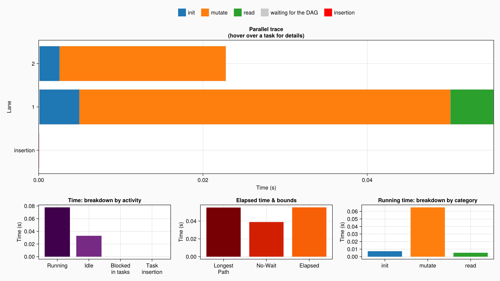
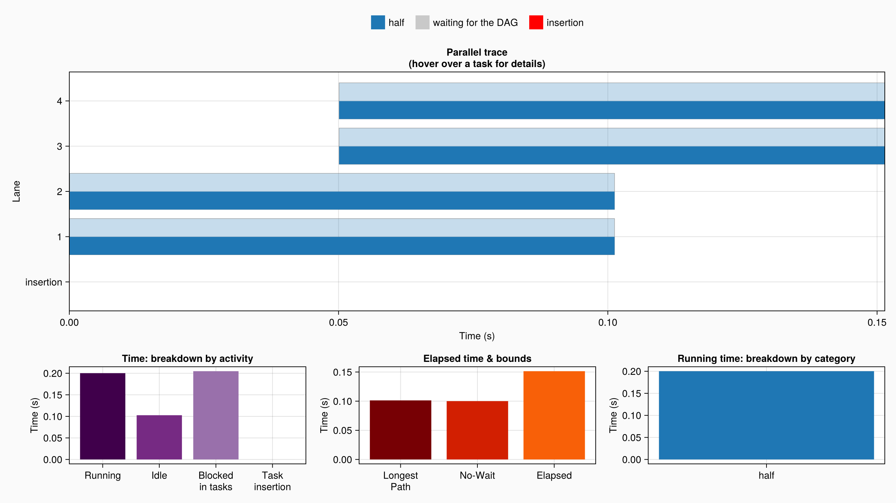
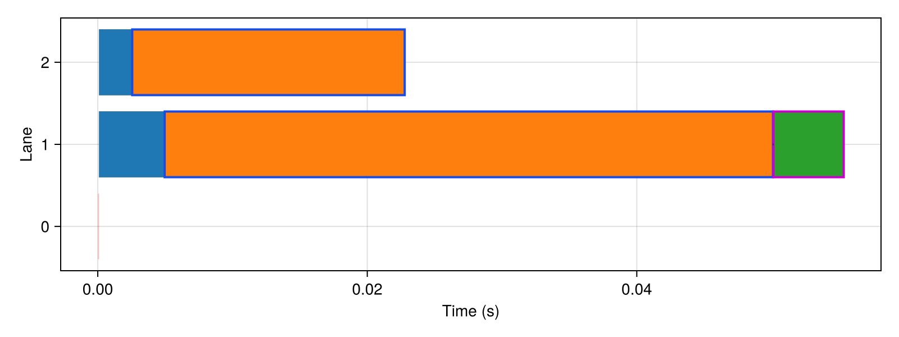
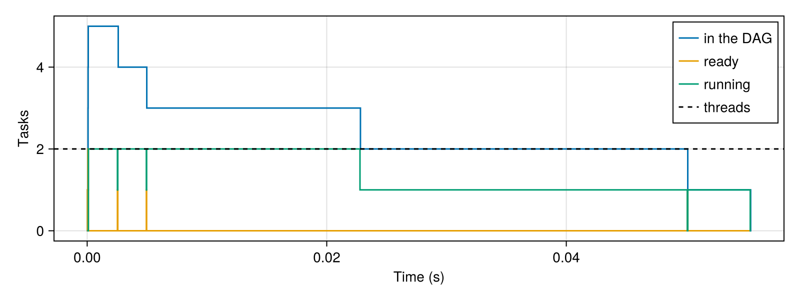

Debugging & Profiling
DataFlowTasks defines two visualization tools that help when debugging and profiling parallel programs:
- a visualization of the Directed Acyclic Graph (DAG) internally representing task dependencies;
- a visualization of how tasks were scheduled during a run, alongside with other information helping understand what limits the performances of the computation.
Visualization tools require additional dependencies (such as Makie or GraphViz) which are only needed during the development stage. We are therefore only declaring those as weak dependencies: the corresponding features are loaded together with these packages (e.g. with using GraphViz), which must be available in the environment you are working in.
Let's first introduce a small example that will help illustrate the features introduced here:
using DataFlowTasks
# Utility functions
init!(x) = (x .= rand()) # Write
mutate!(x) = (x .= exp.(x)) # Read+Write
result(x,y) = sum(x) + sum(y) # Read
# Main work function
function work(A, B)
# Initialization
@dspawn init!(@W(A)) label="init A"
@dspawn init!(@W(B)) label="init B"
# Mutation
@dspawn mutate!(@RW(A)) label="mutate A"
@dspawn mutate!(@RW(B)) label="mutate B"
# Final read
res = @dspawn result(@R(A), @R(B)) label="read A,B"
fetch(res)
endwork (generic function with 1 method)Creating a LogInfo
In order to inspect code which makes use of DataFlowTasks, you can use the DataFlowTasks.@log macro to keep a trace of the various parallel events and the underlying DAG. Note that to avoid profiling the compilation time, it is often advisable to perform a "dry run" of the code first, with logging so that the code used for logging is compiled too, as done in the example below:
# Context
A = ones(2000, 2000)
B = ones(3000, 3000)
# dry run, which compiles the code and the code used for logging
DataFlowTasks.@log work(copy(A), copy(B))
# activate logging of events
log_info = DataFlowTasks.@log work(A, B)LogInfo with 5 logged tasks
The log_info object above, of LogInfo type, contains information that can be used to reconstruct both the inferred task dependencies, and the parallel execution traces of the DataFlowTasks. A summary of this information can be displayed using DataFlowTasks.describe, as illustrated next:
DataFlowTasks.describe(log_info; categories=["init", "mutate", "read"])• Elapsed time : 0.055
├─ Longest path : 0.055
╰─ No-wait (running / workers): 0.039
• Worker time (2 × elapsed) : 0.111
├─ Running tasks : 0.078 (70.2%)
│ ├─ init : 0.007
│ ├─ mutate : 0.065
│ ├─ read : 0.005
│ ╰─ uncategorized : 0.000
╰─ Idle : 0.033 (29.8%)
• Task insertion : 0.000 (0.0% of elapsed)
• Tasks blocked : 0.000 (sleeping, waiting on I/O or locks...)
• Garbage collection : 0.000
• Compilation : 0.000More powerful visualization capabilities, such as displaying the underlying DAG or showing the parallel trace of the tasks executed, are available upon loading additional packages such as GraphViz or Makie. These are discussed in the following sections, where we also explain in more detail the meaning of the numbers output by DataFlowTasks.describe.
@log records the logging window: it starts before running the code block, and ends once the code block has returned and all the DataFlowTasks spawned while logging are completed (even if they are not fetched). For each task, the time it actually spent running is measured separately from the time it spent descheduled (sleeping, waiting on I/O or on a lock...). See Understanding the numbers for the meaning of the reported quantities.
DAG visualization
In order to better understand what this example does, and check that data dependencies were suitably annotated, it can be useful to look at the Directed Acyclic Graph (DAG) representing task dependencies as they were inferred by DataFlowTasks. The DAG can be visualized by creating a GraphViz.Graph out of it:
using GraphViz
GraphViz.Graph(log_info)
-->
<!-- Title: dag Pages: 1 -->
<svg width="256pt" height="188pt"
viewBox="0.00 0.00 256.00 188.00" xmlns="http://www.w3.org/2000/svg" xmlns:xlink="http://www.w3.org/1999/xlink">
<g id="graph0" class="graph" transform="scale(1 1) rotate(0) translate(4 184)">
<title>dag</title>
<polygon fill="white" stroke="none" points="-4,4 -4,-184 251.52,-184 251.52,4 -4,4"/>
<!-- 51874 -->
<g id="node1" class="node">
<title>51874</title>
<ellipse fill="none" stroke="black" stroke-width="2" cx="57" cy="-162" rx="38.06" ry="18"/>
<text xml:space="preserve" text-anchor="middle" x="57" y="-157.32" font-family="Times,serif" font-size="14.00">init A</text>
</g>
<!-- 51876 -->
<g id="node3" class="node">
<title>51876</title>
<ellipse fill="none" stroke="black" stroke-width="2" cx="57" cy="-90" rx="57" ry="18"/>
<text xml:space="preserve" text-anchor="middle" x="57" y="-85.33" font-family="Times,serif" font-size="14.00">mutate A</text>
</g>
<!-- 51874&%2345;>51876 -->
<g id="edge1" class="edge">
<title>51874&%2345;>51876</title>
<path fill="none" stroke="black" stroke-width="2" d="M57,-143.34C57,-136.75 57,-129.08 57,-121.67"/>
<polygon fill="black" stroke="black" stroke-width="2" points="60.5,-121.93 57,-111.93 53.5,-121.93 60.5,-121.93"/>
</g>
<!-- 51875 -->
<g id="node2" class="node">
<title>51875</title>
<ellipse fill="none" stroke="red" stroke-width="2" cx="190" cy="-162" rx="38.58" ry="18"/>
<text xml:space="preserve" text-anchor="middle" x="190" y="-157.32" font-family="Times,serif" font-size="14.00">init B</text>
</g>
<!-- 51877 -->
<g id="node4" class="node">
<title>51877</title>
<ellipse fill="none" stroke="red" stroke-width="2" cx="190" cy="-90" rx="57.52" ry="18"/>
<text xml:space="preserve" text-anchor="middle" x="190" y="-85.33" font-family="Times,serif" font-size="14.00">mutate B</text>
</g>
<!-- 51875&%2345;>51877 -->
<g id="edge2" class="edge">
<title>51875&%2345;>51877</title>
<path fill="none" stroke="red" stroke-width="2" d="M190,-143.34C190,-136.75 190,-129.08 190,-121.67"/>
<polygon fill="red" stroke="red" stroke-width="2" points="193.5,-121.93 190,-111.93 186.5,-121.93 193.5,-121.93"/>
</g>
<!-- 51878 -->
<g id="node5" class="node">
<title>51878</title>
<ellipse fill="none" stroke="red" stroke-width="2" cx="123" cy="-18" rx="54.36" ry="18"/>
<text xml:space="preserve" text-anchor="middle" x="123" y="-13.32" font-family="Times,serif" font-size="14.00">read A,B</text>
</g>
<!-- 51876&%2345;>51878 -->
<g id="edge3" class="edge">
<title>51876&%2345;>51878</title>
<path fill="none" stroke="black" stroke-width="2" d="M72.97,-72.05C80.59,-63.97 89.88,-54.12 98.38,-45.11"/>
<polygon fill="black" stroke="black" stroke-width="2" points="100.78,-47.67 105.09,-37.99 95.68,-42.87 100.78,-47.67"/>
</g>
<!-- 51877&%2345;>51878 -->
<g id="edge4" class="edge">
<title>51877&%2345;>51878</title>
<path fill="none" stroke="red" stroke-width="2" d="M173.78,-72.05C166.04,-63.97 156.61,-54.12 147.99,-45.11"/>
<polygon fill="red" stroke="red" stroke-width="2" points="150.6,-42.78 141.16,-37.98 145.54,-47.62 150.6,-42.78"/>
</g>
</g>
</svg>
)
When the working environment supports rich media, the DAG will be displayed automatically. In other cases, it is possible to export it to an image using DataFlowTasks.savedag:
dag = GraphViz.Graph(log_info)
DataFlowTasks.savedag("profiling-example.svg", dag)Note how the task labels (which were provided as extra arguments to @dspawn) are used in the DAG rendering and make it more readable. In the DAG visualization, the longest path is highlighted in red: it is the chain of dependent tasks with the longest total duration (the sum of the durations of their bodies).
The DAG shows the complete dependencies between the logged tasks, including the dependencies on tasks which had already finished when a task was inserted (the scheduler does not keep track of those, since there is nothing left to wait for). To compute them, a LogInfo keeps references to the data accessed by the logged tasks until it is first analysed (e.g. by describe or GraphViz.Graph).
The run time of this longest path imposes a hard bound on parallel performances: no matter how many threads are available, it is not possible for the computation to take less time than the duration of the longest path.
Scheduling and profiling information
The collected scheduling & profiling information can be visualized using Makie.plot on the log_info object (note that using the GLMakie backend brings a bit more interactivity than CairoMakie):
using CairoMakie # or GLMakie to benefit from more interactivity
plot(log_info; categories=["init", "mutate", "read"])
The categories keyword argument allows grouping tasks in categories according to their labels. In the example above, all tasks containing "mutate" in their label will be grouped in the same category.
Note : be careful with giving similar labels. If tasks have "R" and "RW" labels, and the substrings given to the plot's argument are also "R", and "RW", then all tasks will be in the category "R" (because "R" can be found in "RW"). Regular expressions can be given instead of substrings in order to avoid such issues.
Let us explore the various parts of this graph.
Parallel Trace
The main plot (at the top) is the parallel trace visualization: each task is shown as a bar, from the moment its body started to the moment it finished. The bars are packed in lanes, such that the bars of a lane do not overlap: the number of lanes is the largest number of tasks running at the same time. A lane is not a thread (see the limitations of the parallel trace). Each bar has the color of the category of its task, and is filled from the bottom like a gauge, up to the fraction of its duration the task was actually running: a task which only computes is a full bar, and a task which only sleeps an empty (light) one. The bars of failed tasks are outlined in red.
When hovering over a task in the interactive visualization (i.e. when using GLMakie instead of CairoMakie), the task is outlined in purple, its predecessors in blue and its successors in orange, and the title shows its label and its lifecycle (see DataFlowTasks.TaskTimeline): how long its insertion took (and waited for the DAG to be available), what made it ready, how long it waited to start, and its duration. The same highlighting is available with the highlight attribute of DataFlowTasks.traceplot, which draws the trace in any Makie axis.
The bottom lane shows the insertion of the tasks in the DAG (which is part of the overhead incurred by the use of DataFlowTasks): the analysis of the data dependencies is shown in red, and the time spent waiting for the DAG (locked, or at full capacity) in grey. Inserting tasks involves memory allocations, and may thus trigger garbage collector sweeps: the time spent in the garbage collector during an insertion is shown in yellow. These are not visible for such a small example, but the interactive visualization allows zooming on the plot to search for those small bars.
Time: breakdown by activity
A barplot in the bottom left corner of the window gives us information on how the time was spent (summed over all threads):
Runningrepresents the total time the tasks spent running (i.e. "useful" work);Idlerepresents the time the workers (the threads running the tasks) did not run any task, which may be due to bad scheduling, to a lack of exposed parallelism in the algorithm, or to the program not spawning tasks fast enough;Blocked in tasksrepresents the time the tasks spent descheduled during their body (sleeping, waiting on I/O or on a lock...);Task insertionrepresents the total time spent inserting nodes in the DAG (i.e. overhead induced byDataFlowTasks), on the threads calling@dspawn, possibly including any time spent in the GC if it is triggered by a memory allocation in the task insertion process.
Elapsed time & bounds
A barplot in the bottom center of the window tries to present insightful information about the elapsed (wall-clock) time of the computation, and its limiting factors:
Elapsedrepresents the measured "wall clock time" of the logging window; it is larger than both of the bounds described below;Longest Pathrepresents the duration of the longest chain of dependent tasks in the DAG (shown in red in the DAG visualization). As said above, it bounds the performance in that even infinitely many threads would still have to run this chain sequentially;No-Waitrepresents the duration of a hypothetical computation in which all the running time would be evenly distributed among the workers (i.e. no worker would ever have to wait). This also bounds the elapsed time because it does not account for dependencies between tasks.
When looking for faster response times, this graph may suggest sensible ways to explore. If the measured time is close to the longest path duration, then adding more threads will be of no help, but decomposing the work in smaller tasks may be useful. On the other hand, if the measured time is close to the "without waiting" bound, then adding more workers may reduce the wall clock time and scale relatively well.
Running time: breakdown by category
A barplot in the bottom right of the window displays a break-down of the total running time (i.e. the total time spent on all threads while running user-defined tasks), grouped by user-provided category as explained above.
When trying to optimize the sequential performance of the algorithm, this is where one can get data about what actually takes time (and therefore could produce large gains in performance if it could be optimized).
Interacting with and saving the plots
With GLMakie (in a window) or WGLMakie (in a browser or a notebook), the plots are interactive:
- hovering over a task highlights it with its predecessors and successors, and shows its lifecycle in the title of the trace;
- scrolling zooms in and out, dragging with the left button zooms on a rectangle, dragging with the right button pans, and
Ctrl+ click resets the view. Zooming is the way to see the small insertion bars.
CairoMakie produces static images, as in this documentation.
A figure is saved with save. With GLMakie, this produces a raster image (e.g. .png) of the window as it is, including the zoom and the highlighted task. Vector formats (.pdf, .svg) are produced by CairoMakie, which can be used for saving even when another backend is active:
fig = plot(log_info; categories = ["init", "mutate", "read"])
save("trace.png", fig)
save("trace.pdf", fig; backend = CairoMakie)The DAG is saved with DataFlowTasks.savedag, as shown above.
Understanding the numbers
DataFlowTasks.describe and Makie.plot both report the quantities of the LogSummary computed by DataFlowTasks.summarize. Each of them has a single definition:
| Quantity | Definition |
|---|---|
| Elapsed time $E$ | wall-clock time of the logging window |
| Workers $P$ | number of threads running the tasks (the :default threadpool) |
| Worker time | $P \cdot E$, the time the workers were available |
| Running $W$ | total time the tasks spent running (from Julia's task metrics) |
| Idle | $P \cdot E - W$, the time the workers did not run any task |
| Tasks blocked | total time the tasks spent descheduled during their body |
| Task insertion | total time spent inserting tasks, on the threads calling @dspawn |
| Longest path | wall time of the longest chain of dependent tasks |
| No-wait | $W / P$ |
Both the longest path and the no-wait time are lower bounds of the elapsed time. The tasks run on the :default threadpool, while @dspawn (and therefore the insertion of the tasks) runs on the thread of its caller, which is often the interactive thread.
Let us look at a few simple cases to see these numbers at work. The tasks below either compute (busy), or sleep. To keep compilation out of the measurements, each example is run once before being logged:
using DataFlowTasks, CairoMakie
busy(t) = (t₀ = time(); while time() - t₀ < t end)
xs = [zeros(1) for _ in 1:2Threads.nthreads()]
# run `f` once to compile it, then log a second run
function profile(f)
DataFlowTasks.@log f()
return DataFlowTasks.@log f()
endTasks which only sleep do not run: the workers are idle, and the time the tasks spend sleeping is reported as blocked.
log_info = profile() do
for x in xs
@dspawn (@W(x); sleep(0.1)) label = "sleep"
end
end
DataFlowTasks.describe(log_info)• Elapsed time : 0.101
├─ Longest path : 0.101
╰─ No-wait (running / workers): 0.000
• Worker time (2 × elapsed) : 0.203
├─ Running tasks : 0.000 (0.1%)
│ ╰─ uncategorized : 0.000
╰─ Idle : 0.203 (99.9%)
• Task insertion : 0.000 (0.0% of elapsed)
• Tasks blocked : 0.405 (sleeping, waiting on I/O or locks...)
• Garbage collection : 0.000
• Compilation : 0.000Tasks which compute and then sleep run half of the time. While a task sleeps, its thread runs another task:
log_info = profile() do
for x in xs
@dspawn (@W(x); busy(0.05); sleep(0.05)) label = "half"
end
end
DataFlowTasks.describe(log_info)• Elapsed time : 0.151
├─ Longest path : 0.101
╰─ No-wait (running / workers): 0.100
• Worker time (2 × elapsed) : 0.303
├─ Running tasks : 0.200 (66.1%)
│ ╰─ uncategorized : 0.200
╰─ Idle : 0.103 (33.9%)
• Task insertion : 0.000 (0.0% of elapsed)
• Tasks blocked : 0.205 (sleeping, waiting on I/O or locks...)
• Garbage collection : 0.000
• Compilation : 0.000plot(log_info; categories = ["half"])
Finally, the logging window includes the work done by the program itself, here before spawning any task:
log_info = profile() do
busy(0.2)
for x in xs
@dspawn (@W(x); busy(0.05)) label = "work"
end
end
DataFlowTasks.describe(log_info)• Elapsed time : 0.300
├─ Longest path : 0.050
╰─ No-wait (running / workers): 0.100
• Worker time (2 × elapsed) : 0.600
├─ Running tasks : 0.200 (33.3%)
│ ╰─ uncategorized : 0.200
╰─ Idle : 0.400 (66.7%)
• Task insertion : 0.000 (0.0% of elapsed)
• Tasks blocked : 0.000 (sleeping, waiting on I/O or locks...)
• Garbage collection : 0.000
• Compilation : 0.000Limitations of the parallel trace
Julia measures the time each task spends running, but not when it is descheduled and resumed. Therefore, in the parallel trace:
- a task which is descheduled is filled according to the fraction of its duration it was running, but the moments it was not running are not shown;
- while a task is descheduled, its thread may run other tasks, and the task may resume on another thread. This is why the tasks are shown in lanes rather than on threads: there may be more lanes than threads (as in the second example above).
See Building your own plots for the data available on each task.
Building your own plots
The data behind the plots is available without Makie, so that it can be analysed or plotted with any tool. Let us go back to the first example. DataFlowTasks.timeline gives the lifecycle of each logged task (see DataFlowTasks.TaskTimeline for the meaning of the fields), in seconds since the start of the logging window:
tasks = DataFlowTasks.timeline(log_info)
t = tasks[end]
(; t.label, t.requested, t.inserted, t.ready, t.started, t.finished, t.predecessors, t.ready_by)(label = "read A,B", requested = 8.405700000000001e-5, inserted = 8.9046e-5, ready = 0.050104265, started = 0.050144384, finished = 0.055357168000000005, predecessors = [51876, 51877], ready_by = 51877)The trace is a Makie recipe, DataFlowTasks.traceplot, which can be drawn in any axis. Its highlight attribute outlines a task (here, the last one) with its predecessors and successors:
fig = Figure(; size = (800, 300))
ax = Axis(fig[1, 1]; xlabel = "Time (s)", ylabel = "Lane")
DataFlowTasks.traceplot!(ax, log_info; categories = ["init", "mutate", "read"], highlight = t.tag)
fig
DataFlowTasks.concurrency gives the number of logged tasks in the DAG, ready to run (but not started), and running over time, as step functions. When tasks are ready while fewer tasks than threads are running, the threads are slow to pick them up; when no task is ready, the computation lacks parallelism:
c = DataFlowTasks.concurrency(log_info)
fig = Figure(; size = (800, 300))
ax = Axis(fig[1, 1]; xlabel = "Time (s)", ylabel = "Tasks")
stairs!(ax, c.time, c.dag; step = :post, label = "in the DAG")
stairs!(ax, c.time, c.ready; step = :post, label = "ready")
stairs!(ax, c.time, c.running; step = :post, label = "running")
hlines!(ax, log_info.nworkers; color = :black, linestyle = :dash, label = "threads")
axislegend(ax; position = :rt)
fig
Finally, DataFlowTasks.realized_critical_path gives the chain of tasks which determined the end of the computation, following for each task the predecessor which made it ready. Note that it only follows the dependencies: a task which was ready early but waited for a free thread appears far from its predecessor. It can be outlined in the trace with realized_path = true.